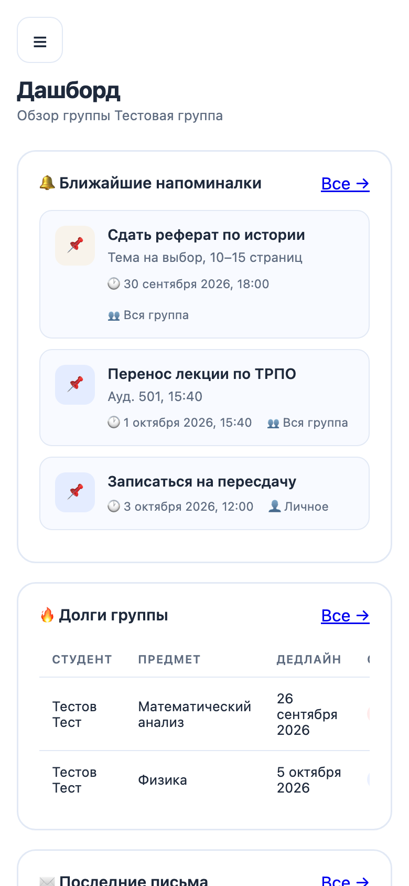
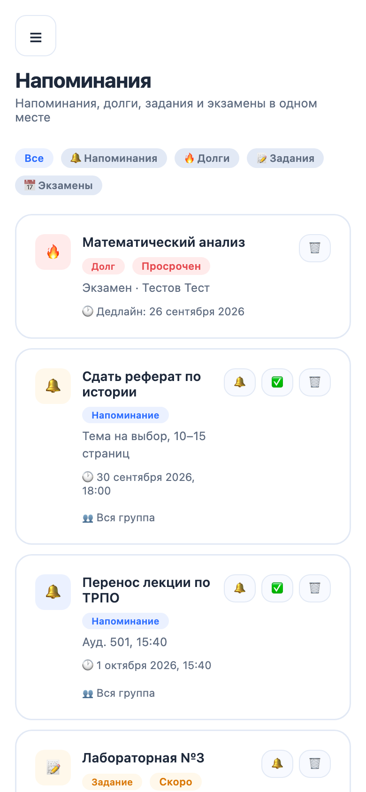
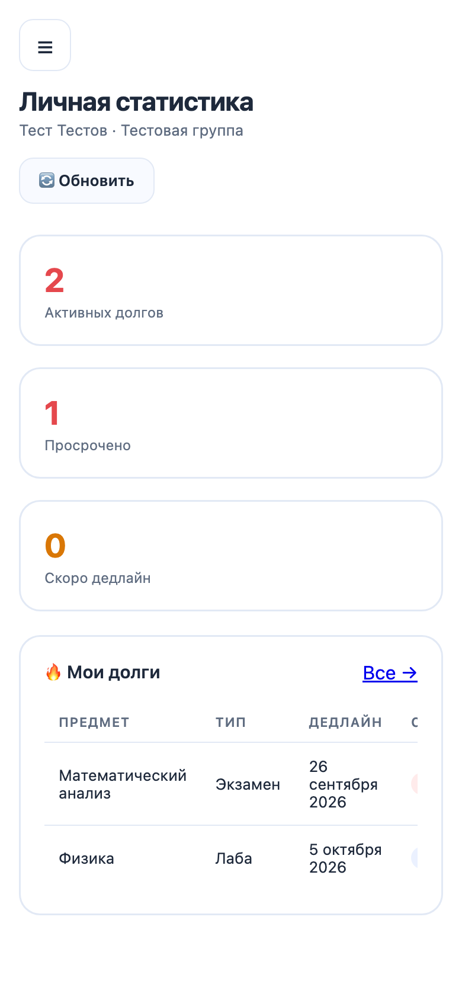
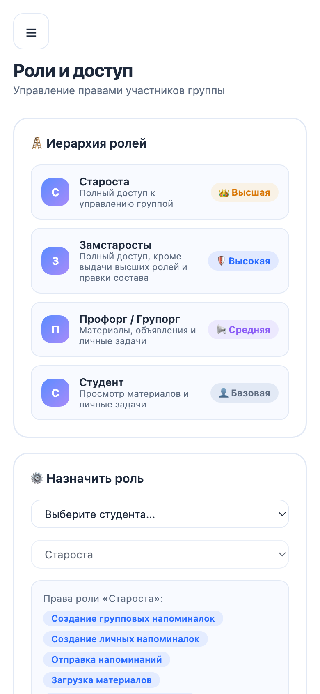

| Чат-бот в MAX | https://max.ru/t595_hakaton_max_bot |
| Репозиторий и commit | https://github.com/Nedelis/mrmoderator · commit ⟨COMMIT-HASH⟩ |
| Мини-приложение | https://envelope-eldercare-earplugs.ngrok-free.dev/ — открывается из бота кнопкой «🔗 Открыть приложение» или командой /open |
| Собственный API | https://envelope-eldercare-earplugs.ngrok-free.dev/api · Swagger: /api/docs · спецификация: docs/openapi.yaml |
| Тестовые учётные записи | Вход через аккаунт MAX, логины и пароли не нужны. Первый пользователь создаёт группу (/creategroup) и становится старостой, остальные вступают по /join КОД. Без MAX: демо-режим, тестовый староста создаётся автоматически |
| Переменные окружения | MAX_BOT_TOKEN=⟨токен бота⟩ · STRICT_AUTH=true · MAX_BOT_USERNAME=t595_hakaton_max_bot · остальное — по умолчанию из .env.example |
| Локальный запуск | cp .env.example .env → вписать токен → docker compose up -d --build → http://localhost:8080 |
| Основной сценарий | /start → /creategroup ИС-21 → /invite → второй аккаунт: /join КОД → /open → «Напоминания» → создать «Для всей группы» → 🔔 → второй аккаунт получает сообщение от бота |
Цифровой помощник старосты: напоминания, долги и материалы группы в одном месте — а уведомления бот доставляет каждому лично
староста тратит на пересылку объявлений и напоминания; важное тонет во флуде, о долгах узнают поздно
группа, напоминалки, задания, долги, экзамены и материалы; бот сам пишет каждому участнику
вместо часов на рутину; уведомления о дедлайнах и долгах — автоматически и адресно
бот, мини-приложение, API и планировщик уведомлений запускаются одной командой Docker
Основано на собственном исследовании: 5 глубинных интервью с активом и опрос 120 студентов (40 — актив, 80 — рядовые студенты).
актива хотя бы раз пропускали важное из-за разрозненных каналов (40 из 40)
студентов узнают об изменениях в расписании позже, чем хотели бы (64 из 80)
актива плохо видят картину задолженностей группы (24 из 40)
студентов лично узнавали о долге слишком поздно (32 из 80)
| Задача | Сейчас | С «Мистером Модератором» |
|---|---|---|
| Донести объявление | Переслать в общий чат, где его пролистают | Напоминалка «Для всей группы» → 🔔 — бот пишет каждому лично |
| Напомнить о дедлайне | Вручную, накануне, если не забыл | Бот сам напоминает за 24 часа до срока — один раз, без спама |
| Контроль долгов | В голове или в заметках, по личкам | Реестр долгов группы, ежедневные напоминания должникам, утренняя сводка старосте |
| Материалы к сессии | Искать по перепискам и «Избранному» | Раздел «Материалы» и материалы, прикреплённые к экзаменам |
| Если староста выпал | Группа без информации | Роли зама и профорга: права делегируются, уведомления идут автоматически |
/creategroup — группа за одну команду, создатель — староста/setchat — привязка группового чатаВозможности MAX: диплинк ?start=invite_… для вступления, MAX Bridge (initData с проверкой подписи, кнопка «Назад»), отправка личных сообщений ботом.
/creategroup ИС-21 — староста получает код и ссылку-приглашение
Одногруппники переходят по ссылке или пишут /join КОД
Напоминалка, задание, экзамен или долг — в одной форме
Одна кнопка 🔔 — бот пишет каждому участнику лично
Автонапоминания за 24 часа, должникам — ежедневно, старосте — утренняя сводка
Результат для старосты: информация доходит до каждого без ручной рассылки, долги и дедлайны группы видны на одном экране. Для студента: личное сообщение от бота вместо поиска объявления во флуде.




| Показатель | Сейчас | Цель | Как измеряем |
|---|---|---|---|
| Время старосты на передачу информации | 1,5–2 часа в день | до 15 минут | Хронометраж у старост пилотных групп до и после |
| Задержка получения информации | часы | минуты | Время от создания напоминалки до доставки (логи бота) |
| Доля пропущенных объявлений | 100% актива пропускали | ≤ 10% | Опрос участников через 2 недели |
| Студенты, поздно узнавшие о долге | 40% | ≤ 10% | Опрос + доля долгов, закрытых до дедлайна |
| Удержание старост | — | гипотеза | Доля групп, активных через 30 дней; NPS |
Общие сервисы. API, бот и планировщик вызывают одни и те же сервисы — правила едины во всех каналах.
Безопасность. Подпись initData (HMAC-SHA256), доступ только к объектам своей группы, секреты — только в .env.
Воспроизводимость. Зависимости закреплены, сборка с нуля — меньше минуты, OpenAPI 3.1 в репозитории.
| Данные / интеграция | Статус | Комментарий |
|---|---|---|
| MAX Bot API | реальная | Команды бота, личные сообщения участникам |
| MAX Bridge, initData | реальная | Пользователь определяется по подписанным данным MAX, подпись проверяется токеном бота |
| Группы, долги, напоминалки, экзамены | вводят пользователи | Староста и участники заполняют сами; интеграции с ЭИОС вуза нет |
| Почта деканата и кафедр | модель | Интерфейс и хранение ящиков без синхронизации IMAP — вне объёма MVP |
| Демо-режим | тестовые данные | Без MAX все запросы идут от автоматически созданного тестового старосты |
Персональные данные (152-ФЗ): хранятся только id, имя и username из MAX, а также роль и группа. Телефоны, почты и оценки студентов не собираются. Данные группы видны только её участникам.
Сценарий «создать → напомнить → проконтролировать», роли и права, модель «группа — участники — дедлайны», бот + мини-приложение, архитектура и планировщик уведомлений
Названия ролей (староста / классный руководитель / куратор), типы долгов и событий, расписание уведомлений, интеграции с ЭИОС, расписанием и почтой организации
| Этап | Куда | Что нужно для перехода |
|---|---|---|
| 1 | Группы одного факультета | Ничего — продукт готов; канал привлечения — профбюро и старостат |
| 2 | Весь вуз | Импорт расписания и списков групп из ЭИОС, почта деканата (IMAP), PostgreSQL |
| 3 | Другие вузы и колледжи СПО | Настройка ролей и типов событий; ~4 млн студентов в 3,2 тыс. колледжей |
| 4 | Школы, дополнительное образование | Роли «классный руководитель — родители — ученики», связка со «Сферумом» в MAX, согласия на обработку данных несовершеннолетних |
⟨вуз, факультет⟩, группы 1–2 курса — там старосты ещё выстраивают процессы. Старосты — первые пользователи, одногруппники приходят по их ссылке-приглашению.
Не заменяет общий чат и ЭИОС: староста переносит в бота только то, что требует внимания всех — дедлайны, переносы, долги. Первое знакомство — через профбюро и собрание старост.
Сервер или облако РФ с HTTPS-доменом, токен бота MAX, контакт в профбюро или деканате, 1 человек поддержки на время пилота.
docs/research.mdREADME.md, docs/architecture.md, docs/api.md, docs/openapi.yaml